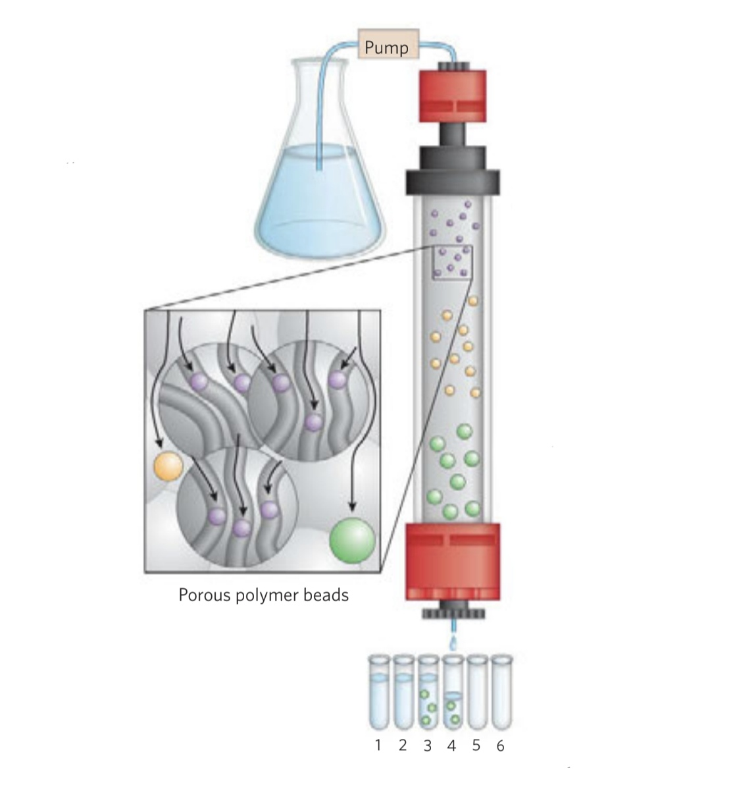

5.Protein Handling and Analysis
Return to IntroductionPrevious:4.Protein Structure And Function
Next:6.Amino Acid Metabolism
5.1.Separation, Purification, and Identification of Amino Acids
5.1.1.Isoelectric Point Precipitation
Due to the different isoelectric points of different amino acids, at the isoelectric point, the net charge of the amino acid molecules is 0, the double layer is destroyed, and the molecules are easily collided and aggregated during movement, resulting in the lowest solubility of the amino acid molecules. Therefore, by adjusting the pH of the amino acid mixture, different amino acids can be separated sequentially.
5.1.2.Chromatography
Chromatography refers to the technique of separating components of a mixture based on their different distribution coefficients in the mobile phase and the stationary phase. The distribution coefficient is represented by Kd, which is numerically equal to the ratio of the solubility of a substance in two immiscible phases.
(Ⅰ) Paper Chromatography
Using filter paper containing hydrophilic groups as the chromatographic medium, water as the stationary phase, and an organic solvent as the mobile phase, the different solubilities of amino acids in the water and organic phases lead to their separation after repeated extraction and distribution. Polar amino acids have high solubility in water, hence low migration rates, while non-polar amino acids have high solubility in organic solvents, leading to high migration rates. The migration rate can be calculated using the following equation:
- X: The distance from the origin to the migration endpoint of an amino acid
- Y: The distance from the origin to the migration endpoint of chromatographic solution
After chromatography, amino acid quantification and qualitative analysis are performed: the separated chromatogram is stained with ninhydrin, and the content of specific amino acids is determined by colorimetric analysis. Under the same chromatographic system, temperature, filter paper type, and operating conditions, the migration rate Rf of each amino acid is constant. By comparing the chromatogram with a standard chromatogram, the types of amino acids can be determined.
The above one-dimensional chromatography is suitable for separating mixtures with few types of amino acids and large differences in Rf, while in the case of separating amino acids in protein hydrolysates or mixtures of amino acids with very close Rf values, two-dimensional paper chromatography can be used. This involves drying the filter paper after the first chromatography, then flipping it 90 degrees for a second round of chromatography, resulting in a two-dimensional chromatogram. Alternatively, paper chromatography can be combined with paper electrophoresis.
(Ⅱ) Ion Exchange Chromatography

Using ion exchange resins as the chromatographic medium, different components of the amino acid mixture with different charges and amounts of charge undergo different degrees of exchange adsorption with the resin based on their electronegativity, primarily determined by electrostatic attraction. Eventually, the amino acids can be eluted in sequence using a buffer solution. Negatively charged amino acids can exchange with anion exchangers (groups), while positively charged amino acids can exchange with cation exchangers (groups). The exchanged amino acids are then connected to the resin. Cation exchange resins generally contain -SO3H (strong acid type) or -COOH (weak acid type) groups, which can dissociate H+; Anion exchange resins generally contain -N(CH3)3OH (strong base type) or -NH3OH (weak base type) groups, which can dissociate OH-.
Separating amino acids commonly involves using strong acid type cation exchange resins with sulfonic acid groups (-SO3H). After loading with acidic solution, amino acids with positive charges due to protonation exchange with H+, adsorbing on the resin, and acidic amino acids, due to a large difference between pI and pH, have a higher adsorption strength than basic amino acids. Upon elution, acidic amino acids are eluted before basic amino acids. Currently, there are fully automatic amino acid analyzers that use ion-exchange resins for sequential elution followed by ninhydrin staining to separate amino acid mixtures, used for analyzing amino acid mixtures in various tissue fluids, hydrolysates, extracts, and body fluids.
| Strong Acid Type | Strong Base Type | |
|---|---|---|
| Hydrogen Type | Resin-SO3- • H+ | |
| Sodium Type | Resin-SO3- • Na+ | |
| Hydroxide Type | Resin-NR3+ • OH- | |
| Chloride Type | Resin-NR3+ • Cl- |
The following is the basic process for separating amino acid mixtures using strong acid type cation exchange resins:
（1）Resin Activation Acidic resins are activated by sequentially washing with acid-base-acid to replace the inactive ions on the resin with active H^+ or Na^+; the treatment for basic resins is the opposite.
（2）Loading Sample loading is done using a buffer solution with a low pH value, at which almost all amino acids are protonated and positively charged, and basic amino acids have more positive charges than acidic amino acids. The affinity of amino acids to the resin (strength of binding) mainly depends on electrostatic attraction, i.e., amino acids with more charges have a tighter adsorption. Therefore, in cation exchange resins, basic amino acids have greater binding strength than acidic amino acids, while in anion exchange resins, acidic amino acids have greater binding strength than basic amino acids; this is followed by the hydrophobic interaction between the amino acid side chain and the resin group.
（3）Elution For acidic cation exchange resins, elution requires a gradual increase in pH and ionic strength of the eluent, with acidic amino acids reaching their pI first and eluting from the resin. The elution sequence is reversed for basic anion exchange resins.
The elution sequence of amino acids in cation exchange resins is as follows:
（4）Regeneration of Resin After a period of use, ion exchange resins become saturated with adsorbed ions and lose their exchange capacity. Regeneration of the resin is necessary to restore its exchange capacity. For strong acid type cation exchanger resins, HCl or H2SO4 can be used as regenerants; for strong base type anion exchanger resins, NaOH or NaCl can be used as regenerants. The regenerants will displace the adsorbed ions on the resin, restoring its exchange capacity.
（5）Analysis Collect the eluates in batches, perform ninhydrin reaction, plot the elution curve, and determine the types of amino acids based on the position of the elution peak and the content of the corresponding amino acid based on the peak value.
(Ⅲ) Gel Filtration Chromatography
Using a gel column with pores as the chromatographic medium, amino acids with molecular diameters larger than the gel pore size flow directly through the interstices, resulting in low migration rates and fast elution, while amino acids with molecular diameters smaller than the gel pore size enter the gel particles, resulting in high migration rates and slow elution. Finally, different volumes of eluent are used to obtain the eluates of different amino acids in batches.
(Ⅳ) Thin-Layer Chromatography
Principle: Using a glass plate as the chromatographic medium, a layer of adsorbent is coated on the surface, enabling the separation of amino acids based on their different distribution coefficients in the two phases.
Analysis: Ninhydrin is used for coloration, and the content of amino acids is determined by colorimetric analysis.
5.1.3.Electrophoresis

Different amino acid molecules in a solution at the same pH carry different amounts and properties of charge, and the larger the difference between the pI and the solution pH of an amino acid, the greater the net charge, and the greater the electrostatic attraction between the amino acid and the electrodes, resulting in a greater migration rate during electrophoresis. Thus, it is possible to separate mixtures of different amino acids.
5.1.4.High-Performance Liquid Chromatography (HPLC)
High-performance liquid chromatography (HPLC) is a modern liquid chromatography technique commonly used for the separation and detection of amino acid mixtures. When an amino acid mixture passes through the column, different amino acids are absorbed or repelled by the stationary phase material based on their specific physicochemical properties, while different mobile phases are used to control the separation of amino acids. The stationary phase material is usually a highly adsorptive material such as dextran or silica gel, while the mobile phase typically consists of organic solvents such as methanol or acetonitrile, and a buffer salt solution such as trifluoroacetic acid or acetate buffer solution.
After separating the amino acids, various detection methods can be used:
- Ultraviolet Absorbance Detection: Some amino acids have ultraviolet absorbance properties, such as Phe, Tyr, and Trp, or amino acids can be directly converted into substances with absorbance properties within the ultraviolet range. Quantitative analysis is done by measuring the absorbance of samples at specific wavelengths using a UV absorbance detector.
- Fluorescence Detection: Some amino acids can emit a fluorescent signal, such as Trp and Tyr, or can be directly converted into fluorescent substances. By adding appropriate excitation and fluorescence enhancement agents in HPLC, these amino acids can produce a fluorescent signal, and quantitative analysis is then done by measuring the fluorescence intensity using a fluorescence detector.
- Mass Spectrometry Detection: HPLC-mass spectrometry (HPLC-MS) directly sends the separated amino acids into a mass spectrometer for analysis.
5.2.Protein Separation and Purification
5.2.1.Separation and Purification Process
- Sampling If extracting proteins from fermentation broth, take an appropriate amount of fermentation broth and first perform solid-liquid separation, filtering out some large molecular insoluble solids. If the required protein is secreted extracellularly, it can be directly collected and purified. If extracting the target protein from a cell, first take fresh, vigorously growing cells with a high protein/enzyme content that are easy to extract and operate.
- Cell disruption If the cells have a cell wall, use enzymatic hydrolysis to break down the cell wall, and then use mechanical methods such as high-pressure homogenization or ultrasonic disruption to release the cell contents.
- Extraction Use a suitable buffer to extract the target protein, avoiding protein denaturation. If the target protein is in the cell membrane, a detergent should be added to disrupt the cell membrane. If the target protein is in the organelles, they need to be separated using differential centrifugation before extraction.
- Rough separation Use large-scale, low-cost methods for preliminary separation, such as isoelectric point precipitation, stepwise salting-out, polar organic solvent precipitation, dialysis, ultrafiltration, etc.
- Fine separation Use small-scale, more precise methods to separate the target protein, such as density gradient centrifugation, gel electrophoresis, gel filtration chromatography, affinity chromatography, ion exchange chromatography, etc.
- Crystallization and recrystallization The target protein is repeatedly oversaturated to precipitate crystals, further removing impurities from the crystal surface, and finally obtaining the product after drying.
- Analysis and identification Determine the purity, content, relative molecular weight, and various physicochemical properties of the protein product. Enzymes also need to determine the purification fold and recovery rate.
- Storage After desalting by dialysis, enzymes are freeze-dried into enzyme powder and stored at low temperatures.
5.2.2.Rough Separation and Fine Separation
(Ⅰ) Based on the Different Solubilities of Proteins**
Isoelectric point precipitation Different proteins have different isoelectric points due to different amino acid compositions. At their isoelectric point, the double layer is disrupted, and protein molecules are prone to aggregate and precipitate. By sequentially adjusting the pH of the mixed solution, different proteins can be precipitated and separated.
Stepwise salting-out High concentrations of neutral salts can disrupt the hydration layer and charged layer of proteins, causing proteins to aggregate and precipitate. Different proteins require different salt concentrations for precipitation. Therefore, by gradually adjusting the salt concentration of the solution, different proteins can be sequentially precipitated and separated.
Low-temperature precipitation with polar organic solvents Polar organic solvents can disrupt the hydration layer of proteins and reduce the dielectric constant of the solution, disrupting the double layer and causing protein precipitation. However, since organic solvents can easily denature proteins, the operation needs to be completed quickly at low temperatures.
(Ⅱ) Based on Different Protein Sizes
Dialysis Based on the colloidal nature of proteins not being able to pass through a semi-permeable membrane, proteins can be separated from other small molecular substances such as monosaccharides, inorganic salts, and coenzymes using a semi-permeable membrane for purification and separation.
Ultrafiltration This method forcefully separates proteins from other small molecular substances through centrifugal force or pressure.
Gel filtration chromatography (molecular sieve chromatography) Using a gel column with pore size as the chromatographic medium, proteins with a molecular diameter larger than the gel pore size remain in the interstices of the gel with low migration rates and rapid elution. Proteins with a molecular diameter smaller than the gel pore size enter the gel column with high migration rates and slow elution. Therefore, different-sized proteins can be eluted using elution solution.
Density gradient centrifugation Proteins with different molecular sizes and densities settle to different extents in an ultra-speed centrifugal field. Therefore, first prepare a sucrose gradient solution (for separating nucleic acids, a CsCl gradient solution is prepared). After adding the sample to the upper layer of the solution, centrifuge it in an ultra-speed centrifugal field. Different proteins will undergo different sedimentation, ultimately forming bands floating within gradients of equal density.
(Ⅲ) Based on Different Protein Charge Properties
Gel electrophoresis Proteins are amphoteric molecules, and different proteins have differences in net charge and electrical characteristics in the same pH system. Under an applied electric field, proteins move towards the oppositely charged electrode and ultimately achieve the separation of different proteins. The electrophoretic mobility of proteins depends on their net charge, molecular size, and shape.
- Isoelectric focusing electrophoresis (IEF): A pH gradient is prepared on the gel. When proteins are electrophoresed, different proteins stop in the pH gradient with the same pI, achieving separation.
- Two-dimensional electrophoresis: When proteins are difficult to separate, they can be initially separated by IEF based on different isoelectric points, followed by rotating the electrophoresis system 90° and performing SDS-denaturing gel electrophoresis to achieve a second separation based on different protein molecular weights, ultimately obtaining a two-dimensional electrophoresis map.
Hydroxyapatite chromatography (HA) Ca2+ in HA can bind to negatively charged groups in proteins, and then proteins can be eluted using a phosphate buffer.
Ion exchange chromatography Commonly used cation exchange agents (CM-cellulose) or anion exchange agents (DEAE-cellulose) act as chromatographic media. According to the different charge properties of individual protein components, different degrees of exchange adsorption occur with the exchange agents (the larger the difference between pI and pH, the greater the net charge, and the tighter the adsorption). Finally, separation is achieved by sequentially eluting with buffers.
| Gel Filtration Chromatography | Ion Exchange Chromatography | Affinity Chromatography |
|---|---|---|
|  |
(Ⅳ) Based on the Presence of Specific Ligands in Proteins
Affinity chromatography A specific ligand is linked in the chromatographic medium, and specific proteins can bind to the ligand, thereby separating the protein from the mixture.
5.3.Protein Content Determination
(1) Kjeldahl Method
- Principle: Protein molecules contain approximately 16% nitrogen. Therefore, by measuring the nitrogen content in the protein, the protein content can be indirectly calculated using the factor × protein factor 6.25.
- Characteristics: Tedious and outdated.
(2) Biuret Method
- Principle: Peptides of three amino acids or more can react with CuSO4 solution under alkaline conditions to produce a purple-red substance with maximum absorbance at 540nm, and the protein content in the sample can be determined using colorimetry.
- Characteristics: Simple, fast, but low precision.
(3) Folin Phenol Method
- Principle: The indole group of Trp or the phenolic OH of Tyr in peptides can react with phosphomolybdate or phosphotungstate to produce molybdenum blue and tungsten blue, with maximum absorbance at 680nm, and the protein content in the sample can be determined using colorimetry.
- Characteristics: Sensitive, but due to differences in the Trp or Tyr content between the target protein and the standard protein, results may be inaccurate.
(4) Coomassie Brilliant Blue Method
- Principle: Peptides can react with Coomassie Brilliant Blue G-250 to produce a blue substance with maximum light absorption at 595nm, and the protein content in the sample can be determined using colorimetry.
- Characteristics: Sensitive and accurate.
(5) UV Absorbance Method
Principle: Since almost all peptide chains contain aromatic amino acids, and aromatic amino acids have maximum light absorption at 280nm due to the conjugated double bond of the benzene ring, the protein content can be directly determined using colorimetry.
Characteristics: Fast, but may lead to errors due to nucleic acids (nucleic acids have maximum OD260, which can cause inaccuracies in the results).
5.4.Protein Molecular Weight Determination
Ultracentrifugation Method Different proteins have different molecular weight and density, so they undergo different degrees of sedimentation in a centrifugal field. The relative molecular weight of the protein can be calculated by measuring the sedimentation process using relevant formulas.
Gel Filtration Chromatography Using porous gel beads as the chromatographic medium, proteins with different molecular sizes have different migration rates. If the molecular diameter is larger than the diameter of the gel bead, it flows down from the gap between the gel beads, with a small migration rate and fast elution. If the molecular diameter is smaller than the diameter of the gel bead, it flows into the gel and has a large migration rate, with slow elution. First, a series of known standard proteins with relative molecular weight are taken, and the eluted volume Ve is measured from the time of sample injection to complete elution. Using Ve as the abscissa and Log Mr as the ordinate, a standard curve is drawn. Finally, the Ve of the protein to be tested is measured, and the Mr size is determined by comparing it with the standard curve.
SDS-polyacrylamide Gel Electrophoresis Sodium dodecyl sulfate (SDS) is an anionic detergent that can destroy the protein conformation, forming linear or fibrous polypeptide chains, while attaching a layer of negative charge far higher than its own charge to the surface of the polypeptide. Therefore, the migration rate of the protein depends only on the relative molecular weight of the polypeptide. Beta-mercaptoethanol can also be added to break disulfide bonds. After electrophoresis, the relative molecular weight size is determined by comparison with the standard marker. This method is generally not used for protein separation and purification, especially for oligomeric proteins. For proteins containing subunits of the same molecular weight, the band of each subunit after electrophoresis almost overlaps, and it may be impossible to determine the number of polypeptides.

5.5.Protein Structure Determination
5.5.1.Primary Structure Determination
Requirements: the Mr of the protein is known, and the purity of the protein is greater than 95%.
(1) Determination of the Number of Polypeptide Chains
The number of polypeptide chains is calculated by measuring the molar amount of amino acids at the ends of the polypeptide chain and comparing it with the molar amount of the known protein.
(2) Subunit Separation and Disulfide Bond Breaking
8 mol/L urea or 6 mol/L guanidine hydrochloride is added to destroy the spatial structure of the protein and separate each subunit. Beta-mercaptoethanol is then added to break the inter-chain disulfide bond, while adding alkylating agents such as iodoacetic acid to prevent the disulfide bond from being re-oxidized.
(3) Determination of Amino Acid Composition and Proportion in Polypeptide Chains
After hydrolyzing the polypeptide fragments, they are added to an automatic amino acid analyzer (ion exchange chromatography + ninhydrin colorimetry). The composition and content of amino acids are determined by the elution curve.
(4) Determination of the Arrangement of Amino Acids in the Polypeptide Chain
(a) Determination of the Types of N-terminal and C-terminal Amino Acids
N-terminal methods:
- Sanger (DNFB) Method: 2,4-dinitrofluorobenzene reacts with the N-terminal amino acid of the polypeptide chain to form DNP-polypeptide, which is then hydrolyzed by acid to form numerous amino acids and a yellow DNP-Aa. The type of amino acid is identified by chromatography.
- DNS Method: Similar to the Sanger method, the N-terminal amino acid is separated and identified by colorimetry.
- Edman (PITC) Method: Phenyl isothiocyanate reacts with the N-terminal amino acid of the polypeptide chain to form PTC-polypeptide, which is then hydrolyzed by acid to form a PTC-amino acid and a truncated polypeptide chain. The type of amino acid is identified by chromatography, and the truncated polypeptide chain enters the next round of Edman degradation. This method can determine the amino acid sequence of dozens of peptides.
- Aminopeptidase Method: Aminopeptidase hydrolyzes the peptide bond from the N-terminus to identify the type of amino acid.
C-terminal determination methods:
- Hydrazine Method: Polypeptide reacts with anhydrous hydrazine to make the C-terminal amino acid fall off, and the type of amino acid is identified by chromatography.
- Carboxypeptidase Method: Carboxypeptidase hydrolyzes the peptide bond from the C-terminus to identify the type of amino acid.
(b) Obtaining two or more sets of peptide fragments using two or more methods to hydrolyze the polypeptide.
Enzymatic hydrolysis methods:
- Trypsin: Hydrolyzes the peptide bond formed by -COOH of Arg and Lys
- Chymotrypsin: Hydrolyzes the peptide bond formed by -COOH of Phe, Tyr, and Trp
- Elastase: Hydrolyzes the peptide bond formed by -COOH of aliphatic amino acids
- Pepsin: Hydrolyzes the peptide bond formed between hydrophobic amino acids
- Streptomyces Griseus Protease: Hydrolyzes the peptide bond formed by -COOH of Asp and Glu
Chemical method:
- CNBr (Cyanogen Bromide): Hydrolyzes the peptide bond formed by -COOH of Met
(c) Separating and Sequencing Small Peptide Fragments
- Separation methods: Electrophoresis, gel filtration chromatography
- Sequencing methods: Amino acid automatic analyzer or Edman degradation
(4) Peptide splicing
Assembling Several Sets of Small Peptide Fragments into a Complete Polypeptide using a computer.
(5) Determination of the Location of Disulfide Bonds
If there are Cys in the polypeptide chain, diagonal electrophoresis can be used to determine their location.
5.5.2.Advanced Structure Determination
- X-ray diffraction
- Nuclear Magnetic Resonance (NMR)
- Cryo-electron microscopy (Before AlphaFold, Shih Yigong, Yan Ning and other structural biologists used this method to analyze protein spatial structure.)